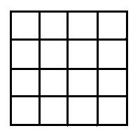
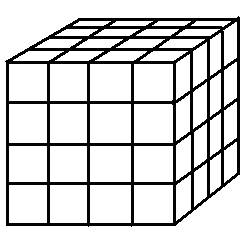

Problem J
(2/3/4)-D
Sqr/Rects/Cubes/Boxes?
Input: standard input
Output: standard
output
Time Limit:
2 seconds
You can see a (4x4) grid below. Can you tell me how many squares and rectangles are hidden there? You can assume that squares are not rectangles. Perhaps one can count it by hand but can you count it for a (100x100) grid or a (10000x10000) grid. Can you do it for higher dimensions? That is can you count how many cubes or boxes of different size are there in a (10x10x10) sized cube or how many hyper-cubes or hyper-boxes of different size are there in a four-dimensional (5x5x5x5) sized hypercube. Remember that your program needs to be very efficient. You can assume that squares are not rectangles, cubes are not boxes and hyper-cubes are not hyper-boxes.
|  |  |
|
Fig: A 4x4 Grid |
Fig: A 4x4x4 Cube |
Input
The input contains one integer N (0<=N<=100) in each line, which is the length of one side of the grid or cube or hypercube. As for the example above the value of N is 4. There may be as many as 100 lines of input.
Output
For each line of input, output six integers S2, R2, S3, R3, S4, R4 in a single line where S2 means no of squares of different size in ( NxN) two-dimensional grid, R2 means no of rectangles of different size in (NxN) two-dimensional grid. S3, R3, S4, R4 means similar cases in higher dimensions as described before.
Sample Input:
Sample Output:
“A bus was running at full speed and suddenly
the driver stopped it.
As a result a passenger fell down from his
seat and began scolding
Newton as Newton invented inertia of motion.”